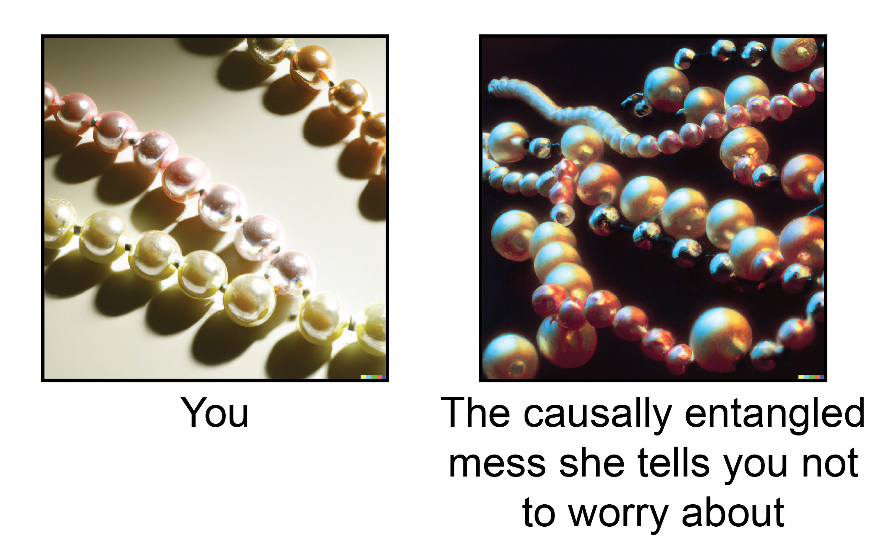

minimalpriora spinoff |
Updated | ||
|---|---|---|---|
| Author | Jan Kirchner | ||
Text within this block will maintain its original spacing when published
_The letter is for you, dear reader. For you who are still here, for you who are still a reader, for the only reader of all, the author, for her, for all readers, for those who've long ago read and found the story unsatisfactory, for all of you who, as I've said, have long since passed through the gateway, through the doorway, through the opening that leads to the realms of the story and to the realm of the storytellers, who are all gone, who are all gone forever. Thank you for being here. […] Best wishes to you, dear reader. -[#IAN](https://kirchner-jan.github.io/minimalprior/posts/universalprior/making-of-ian)_
As some of you might have read, I recently joined OpenAI as a researcher on the alignment team, and, phew, doing all the things is not as trivial as I thought. I’ve previously quipped about how I have no expertise in AI. While that was perhaps hyperbole, getting up to speed with where AI is heading and how to best contribute to that is fun but also a challenge. Luckily, I am not alone on my journey into AI alignment research, and I get to collaborate with some absurdely[1] brilliant people. So the timing of joining was also kind of perfect. So things are getting more manageable every day.
[1]
At OAI, I go by my middle name (Hendrik) to mitigate domain clashes. Unfortunately, I’ve introduced myself as Jan to some people outside of work, so I tend not to react when anyone calls me.
But this little essay is not about alignment research but instead about another passion of mine: not giving advice. I recently had a video call with friends at Ought about how I used their tools for academic writing. In that call, I got to wax poetically about how large language models can make a researcher’s life easier and how I think about writing text. After seeing the video, a few people contacted me to ask more questions about my workflow and how I feel about using large language models to research. So now I find myself in a bit of an awkward position….
Thanks for reading On Brains, Minds, And Their Possible Uses! Subscribe for free to receive new posts and support my work.
First off, I’m not a fan of belaboring a process. XKCD said all that needs to be said, reality is not a nice linear sequence of events where cause and effect are visible on the surface but rather a weird mess of causally entangled stuff.

A better strategy than behaviorally cloning the process of someone who claims to have it figured out is to identify the underlying generators that produce their success. That’s easier said than done, though, and I have no reliable method for finding generators (yet).
Second, even though I still do research, I write more code than prose these days. So my writing muscle has atrophied a little bit[2]. It would be silly to restart with a post on how I write.
[2]
And it’s conceited to assume that you have a writing muscle in the first place. Do as I say, not as I do.
And yet, here we are.
I decided to reject the second argument above because it is self-reinforcing. Not writing because I have not written recently is - quite clearly - a lousy reason. After not having written for a while, writing about how I write seems appropriately self-referential for this Substack. And finally, with prose and code converging rapidly, a reflection on the architecture of text might provide unexpected insights into how AI thinks. And maybe looking at my process allows some people to derive a generator[3]. Sooo~
[3]
Let me know if you do, would be curious to hear!
TSPSI~~.My writing framework is called the ‘TSPSI’[4] framework. I picked it up at some point during my Ph.D. and can’t find a reference for it online, but I’m almost sure it’s not original.
[4]
Just rolls off the tongue, doesn’t it?
The idea is to think of writing as a report of “travel through treacherous territory.” In particular,
you are writingfor a reader. If you care about your reader, try to make things pleasant for them. Realize that they know different things than you, and try to keep inferential distances small.
Aspire to be objective but realize that the product will be subjective. Describe your travel as accurately as possible (no embellishments!), but be aware of the limitations of your perceptions.
realize that your writing mirrors a journey. There will be a start and an end, and you are moving through the territory step by step. Keep in mind where you want to end up.
hot take: prompt engineering for language models will not be a thing anymore soon, but will be much stickier for image generation
With these points in mind, here are the five stations you want to visit in everything you write.
What are you writing about? Where in the territory are we? Why should the reader care?
This section is the easiest to write and the easiest to neglect. The more familiar you are with the territory, the more you’ll forget about how non-obvious it is to get there.
What have other people (or you) said previously about the territory? What does the surrounding territory look like?
This section can quickly grow out of control if you attempt a complete description of the surrounding territory. A full report is not necessary or desirable. Compress and remove.
What are the wrinkles in the landscape? Where is the terrain foggy/uncharted?
This section puts the reader into your shoes at the onset of your travel. Describe what sparked your interest and what you knew you didn’t know.

How did your travel go? What did you see?
Here is what the landscape looks like (I went out and looked)/Here is what I think it should look like (I thought about it very hard)/here is how I feel the wrinkles can be reconciled (I paid attention to these details that have been neglected before)/…
What’s next?
Now that we have an improved view of the territory, we can describe ‘the delta’ and the new territory that has become accessible. Again, be humble (don’t oversell) but also keep in mind that you are in the best position to see the new territory, given how familiar you are with your work.
While the TSPSI framework was introduced to me as a framework for academic writing, I’m applying it much more broadly. For example, whenever I have a blank page in front of me that I want to fill with words, I create five headers and write down thoughts as they appear in the appropriate section. This is particularly fun with a tool like Roam Research, where I can drag and drop thoughts from outside the workspace into the list and rearrange things on the fly.
When fleshing out the sections, I tend to use language models to expand my notes into prose. But, perhaps most important lesson I’ve learned in the last year is that resampling is a superpower - a small language model that produces completions fast (so that Idon’tdiscard completions I don’t like) can be much more useful than a larger language model that is slow (so that I can only get one completion).
This way, I can get to a first draft very fast; but to go from there to something I am satisfied with still requires substantial iterations of editing;
from fanciful renaming (‘Solution to the state of the art’ →
‘Je vous présente TSPSI’)
and merging sections (‘state of the art’ & ‘problem with the state of the art’ → ‘Why I shouldn’t write this’)
to liberally reinterpreting the function of sections (‘It’s been a minute and darn, I’ve missed you.’)
and layering in a second theme (self-reference, this very sentence).
The amount of time we can invest in working on a text is unbounded. But clearly, quality of writing increases asymptotically at best. Formalizing the gradient that people follow when improving a text is an important open problem, with possible solutions being critiques or diffusion. I’ve experimented with AI-powered versions of these things, but none of the existing solutions are quite as good as getting human feedback or going through the pain of editing the text myself again and again. So, for now, editing is still the slowest part of the writing process for me.
Having revealed my secret sauce for writing, consider going through some of my older posts, such as
and see if you can recover the TSPSI framework ;)
I’m happy to have written this! I’ve wanted to have a reference for the TSPSI framework for a while, and I also enjoy being able to click the “publish” button once again. I hope that, despite my general skepticism of advice, the ideas in this post can be useful for other people.
At the same time, I always feel a bit dissatisfied about posts that don’t have any data or simulations. But those also tend to take a lot more time, and clash a bit with what I do in my dayjob, so I’m a bit hesitant to go in that direction. Hopefully, sometime soon I’ll return to that. Let me know what you think!